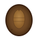
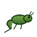

羽化ライフサイクル確認
保存、同期、プロフィール作成は行いません。実ユーザーデータを読み込まず、プレビュー専用のカブトムシとバッタだけで再生します。
完全変態
🥚 卵→
🐛 幼虫→

蛹→ 羽化 🪲 成虫不完全変態
🥚 卵→

若虫→ 成虫化 🦗 成虫修正点：育成カード内に「画像のない成虫段階」は置かず、蛹または若虫から実際の成虫画像へ一度だけ切り替わります。
保存、同期、プロフィール作成は行いません。実ユーザーデータを読み込まず、プレビュー専用のカブトムシとバッタだけで再生します。

蛹→ 羽化 🪲 成虫
若虫→ 成虫化 🦗 成虫修正点：育成カード内に「画像のない成虫段階」は置かず、蛹または若虫から実際の成虫画像へ一度だけ切り替わります。